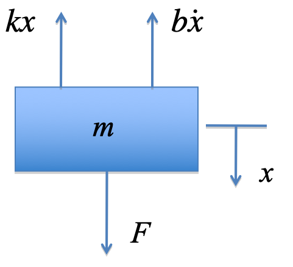
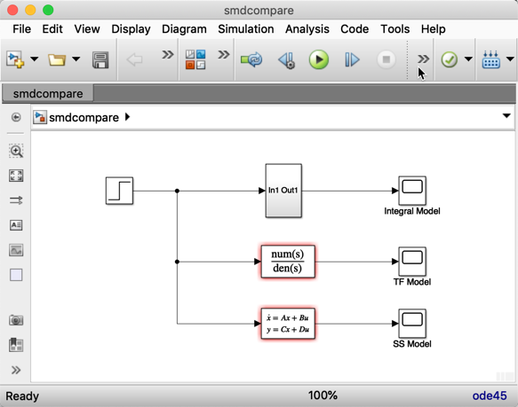

Lecturer
Set up MATLAB
cd matlab
pwd
clear all
imatlab_export_fig('print-svg') % Static svg figures.
format compact
Error using cd
Cannot CD to /Users/eechris/code/src/github.com/cpjobling/eglm03-textbook/_build/jupyter_execute/01/matlab (Name is nonexistent or not a directory).
1. System Modelling and Simulation¶
1.1. Contents¶
Ordinary differential equations
Transfer functions
Integral models
Using Simulink
State-space models
1.2. Ordinary Differential Equations¶
Used to model a wide variety of so-called “lumped parameter” problems in engineering and technology.
Based on the fundamental laws of nature such as Ohm’s law, Newton’s laws of motion, thermodynamics, chemistry etc.
We will assume that you have or can derive such a model in your domain of interest.

1.2.2. Free body diagram¶

1.2.3. Differential equation¶
1.2.4. Challenge for Electrical Engineers¶
Can you think of a simple electrical circuit that has a similar differential equation?
Clue: it would have 1 resistor 1 capacitor and 1 inductor.
1.3. Transfer functions¶
1.3.1. Laplace transform¶
Allows us to represent a the differential equation representing a linear-time invariant (LTI) system as a rational polynomial in \(s\).
This can be solved for \(t\) using the inverse-Laplace transform (time domain).
Can substitute \(s=j\omega\) to determine the response to sinusoidal inputs (frequency domain).
1.3.2. Transform version of the SMD¶
Let:
then
1.3.3. Transfer function¶
1.3.4. Block diagram¶

1.3.5. MATLAB LTI Object¶
%%file matlab/smd_params.m
%% SMD_PARAMS - define parameters for Spring Mass Damper (SMD) model
m = 1; % kg
b = 0.6; % Ns/m
k = 5; % N/m
smd_params
Error using eval
Unrecognized function or variable 'smd_params'.
smd_tf = tf([1], [m b k])
smd_tf =
1
---------------
s^2 + 0.6 s + 5
Continuous-time transfer function.
step(smd_tf)
1.4. Integral Models¶
If system is non-linear, time-varying or very high order, we may not be able to solve the differential system directly.
We typically resort to simulation
MATLAB has a system simulation tool called Simulink.
We first need to convert the differential equation to integral form.
1.4.1. Integral form¶
Makes use of the fact that for any differential term:
We can use this fact to rearrange any nth-order differential equation into n first-order integral equations.
Using a numerical integration algorithm, we can solve such equations.
1.4.2. Integral form of SMD equations¶

1.4.5. Results of simulation¶

1.5. State-space models¶
Let \(x_1 = x\) and \(x_2 = \dot{x}\) then
In matrix form
1.5.1. General state-space model¶
1.5.2. MATLAB LTI Model¶
A = [0 1; -k/m -b/m]; % state matrix
B = [0; 1/m]; % input matrix
C = [1 0]; % Output matrix - output y = x1
D = [0];
smd_ss = ss(A, B, C, D)
smd_ss =
A =
x1 x2
x1 0 1
x2 -5 -0.6
B =
u1
x1 0
x2 1
C =
x1 x2
y1 1 0
D =
u1
y1 0
Continuous-time state-space model.
step(smd_ss)
1.6. Comparison¶

smdcompare
Error using eval
Unrecognized function or variable 'smdcompare'.
1.6.1. Results¶

1.7. Models and their uses¶
Integral models for general solution of high-order, linear and non-linear differential equations.
State-space models for linear time-invariant, time-varying and multi-input multi-output (MIMO) systems.
Transfer function for linear time-invariant (LTI), single-input single output (SISO) systems
1.8. Feedback and suggestions¶
“Which bit of this session did you find the most difficult to understand”
Use the Teams week 1 discussion to post feedback.
1.9. Additional Background Material¶
Background is extra topics, usually references to the recommended text or links to web resources, that are provided to amplify topics that are introduced in the other activities. You are expected to access these materials in your own time. For this chapter, the background reading is all from the Control Systems Wikibook.